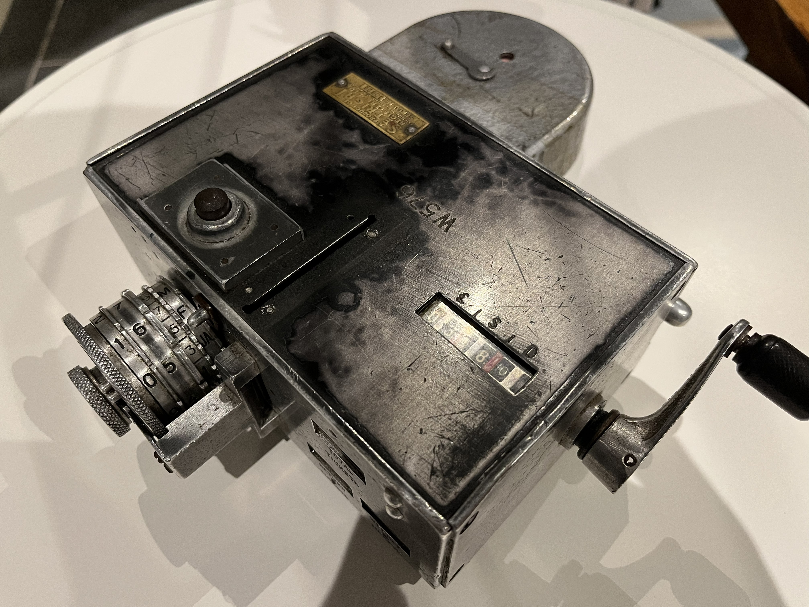
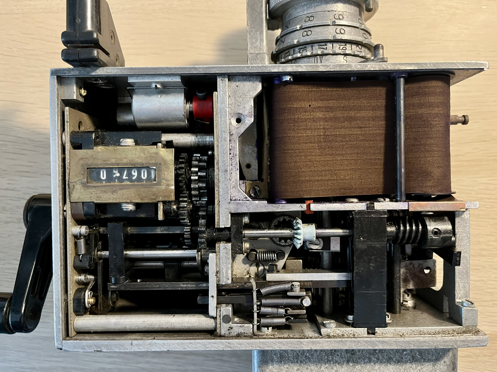
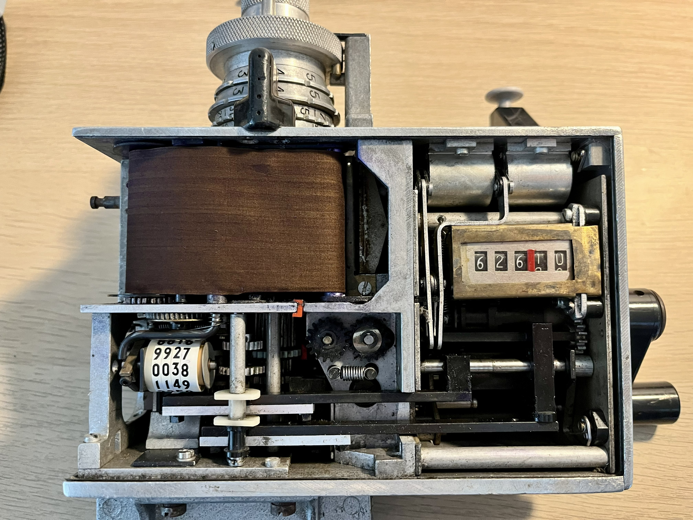
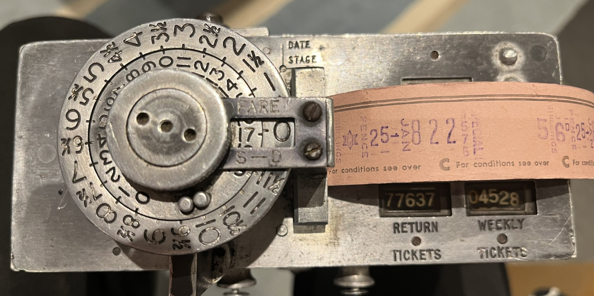
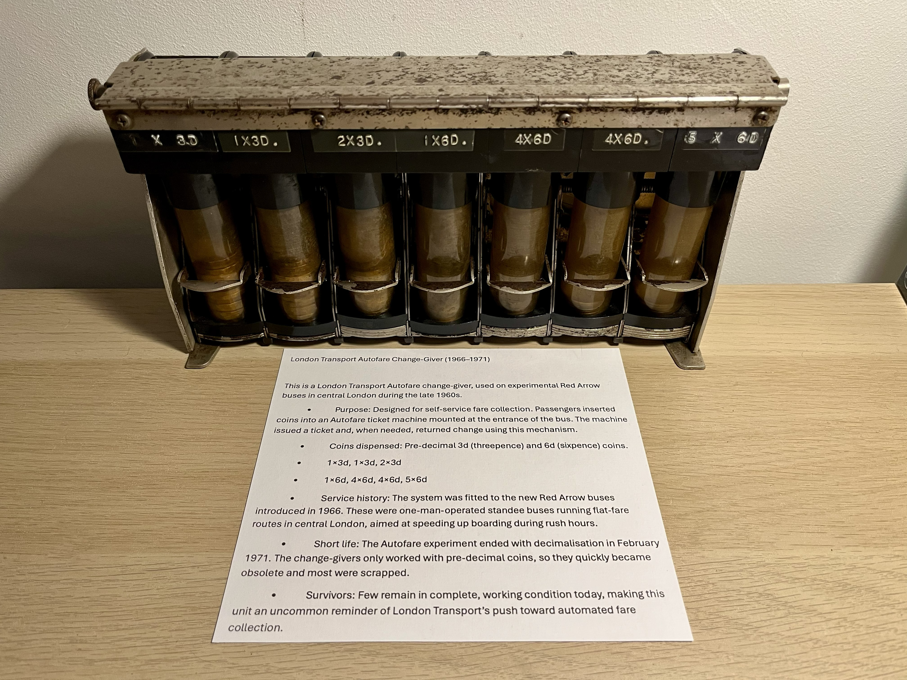

SetRight Project

These setriught machines are vintage ticket machines from the 1950s to the 1970s. Different transport companies used these machines to issue tickets for their services, notably including British Rail and London Transport.
I had bought these machines to restore them to a working condition to show people the intricacies of their design and operation.
Currently i use these machines while working as a ticket inspector at the North Norfolk Railway so i can show customers how ticketing worked in the past.
Restoration Process
I spent many hours working through the intricate mechanisms of the machines, trying to work out how they worked and what was stopping them from functioning properly.
After lots of work to restore them, they are now fully functional and can be used to demonstrate the history of ticketing.
What next?
Looking ahead, I plan to continue showcasing these fascinating machines at various events and museums, sharing their stories and the history of ticketing with a wider audience.
I plan on expanding my collection and finding more similar machines so i can restore them and preserve their history.
Gallery
Here are some more photos of the machines and the restoration process:




